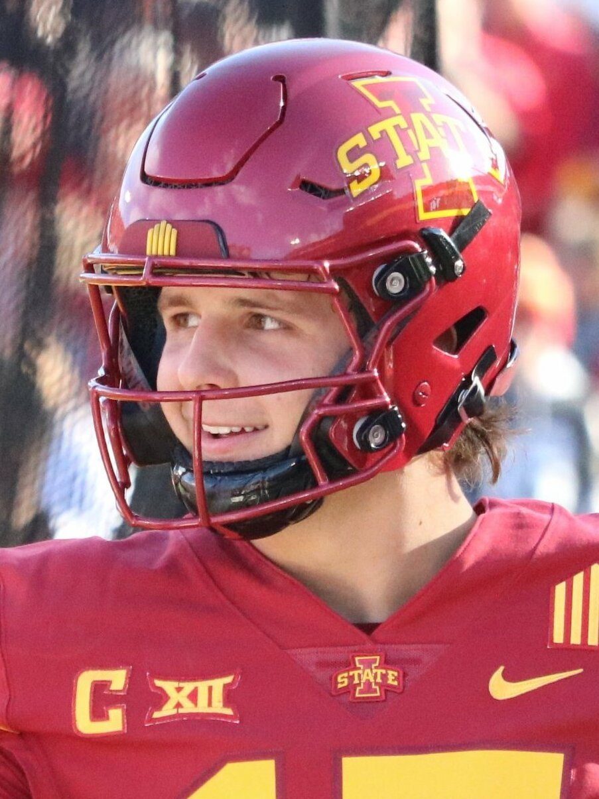

Purdy and Rookie De'Zhaun Stribling Are Already Cooking, and This Niners Roster Is Loaded
Watch this kid. De'Zhaun Stribling is already timing routes up with Brock Purdy like a guy who's been in the building for years, not weeks, and he's just the newest piece on a 49ers roster that suddenly looks stacked from top to bottom.

Every camp has a rookie everybody's talking about, but the buzz around De'Zhaun Stribling and Brock Purdy feels different. It's not just that Stribling is running clean routes for a first-year receiver, it's that Purdy already trusts him in spots where trust usually takes a full season to build. The back-shoulder throws are on time. The double moves are getting sold. This isn't "flashing potential," this is a quarterback and a rookie wideout who are already speaking the same language, and if that continues into the regular season, the Niners front office nailed this pick. Stribling looks like a baller. Keep an eye on him.
And he's not walking into an offense that needs him to be the whole show, which honestly makes the fit even better. Mike Evans is in the building now, a proven X-receiver with a decade of production who gives Purdy a red-zone target he simply hasn't had. George Kittle is back healthy and still one of the most dangerous mismatch tight ends in football. Christian McCaffrey is back in the backfield. Trent Williams is anchoring the line again. That's four established stars around Purdy before you even get to the rookie, and Stribling gets to develop without the offense needing to lean on him early. That's how you build a receiver room the right way.
The defense is just as loaded. Fred Warner and Nick Bosa are both back, and Dre Greenlaw is back too after the injuries that gutted this defense the last couple years. When that trio is healthy at the same time, this defense has a totally different ceiling — Warner running the show in the middle, Bosa wrecking backfields off the edge, Greenlaw flying around making plays sideline to sideline. Teams that were getting away with things against a banged-up Niners defense are not going to get away with them this year.
Put it all together and this isn't a "if things break right" roster anymore. It's Purdy with legitimate weapons at every level, a rookie receiver already building real chemistry with his quarterback, and a defense getting its best players back healthy at the same time. The Niners are dangerous again, and they're loaded enough that Stribling gets to grow into his role instead of being rushed into carrying one. That's a scary combination for the rest of the NFC.
More coverage: 49ers section · Columns · Bay Area Sports Blog home